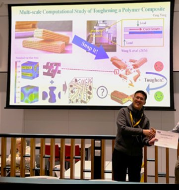

I'm a Chartered Engineer (CEng MIMechE, MIMMM, FHEA) with a PhD from
the University of Manchester, where I developed micromechanical
models for fibre-hybrid composites. I'm currently a Senior R&D
Engineer at Synopsys, having previously worked as an R&D Engineer at
Ansys Materials — building materials intelligence tools used across
aerospace, automotive, and energy simulation workflows. I also spent
over four years as NAFEMS' Italia Regional Representative, organising
engineering simulation webinars and conferences.
Make IT STEM grew out of something I kept seeing — through teaching
at Manchester and mentoring on the side — talented graduates who had
strong technical foundations but struggled to translate that into the
confidence, communication skills, and strategic thinking that
employers actually look for. I started mentoring informally, then
realised this gap needed a dedicated, structured approach.
Today I help students and early-career engineers bridge that gap —
combining real CAE and materials R&D experience with personalised,
1:1 mentoring that goes far beyond generic careers advice.
Real outcomes from engineers who've been through the programme.
★★★★★
“I had the privilege of learning from Giuseppe during my Master's dissertation on composite materials. His approachable nature and openness to discussion make him an exceptional mentor. Before meeting him, my knowledge of programming and FEA was very limited and I couldn't see its potential, but his engaging teaching style sparked my interest and eventually turned it into a passion. He has a strong grasp of the fundamentals and explains concepts in a clear, easily understandable way. With his expertise in programming, FEA, and composites, I can confidently vouch for his mentorship — any learner under his guidance is truly privileged.”
YRYeshwanth N. Rao

★★★★★
“During my MSc Aerospace Engineering programme, I was initially quite lost on my dissertation about microstructure simulation using Abaqus CAE. That's when I found Dr Romano as a personal tutor for help — and the outcome was really positive! Giuseppe not only taught me the academic concepts and modelling skills, he also helped me understand the fundamental principles. He isn't someone who just aims to get the task done; he tried his best to help me truly understand. I scored the highest in the whole engineering faculty. He is patient and easy to get along with. Highly recommend his tutoring — especially for any query in modelling, materials or structures.”
Yang Yang
★★★★★
“I undertook my dissertation on Finite Element Analysis using Abaqus in my final year, with help from Dr Romano during the last year of his PhD. He was incredibly helpful and approachable even during his busiest periods — he always spared time and gave me the resources and guidance to do well. I am incredibly grateful and achieved 79.5% in my final dissertation report at the University of Manchester. I highly recommend working with him.”
Most careers advice stops at a polished CV. The Make IT STEM Method starts
from what industry actually hires for, maps it against the skills you already
have, and closes the gap one step at a time.
1
Discover
A free 15-minute call. We talk about where you are, where you want to be, and whether I'm the right person to help. No commitment and no sales pitch.
2
Map
We map your technical and transferable skills against the roles you're aiming for, find the gaps that really matter, and agree clear, measurable goals.
3
Build
Focused 1-to-1 sessions on whatever moves you forward: CV and applications, interview practice, communicating your value, industry insight and career strategy.
4
Launch
You apply with confidence. I stay available for follow-up questions as you handle interviews, offers and your first career decisions.
Ready to bridge the gap?
Book a free 15-minute discovery call and let's talk about where you are, where you want to be, and how to get there.